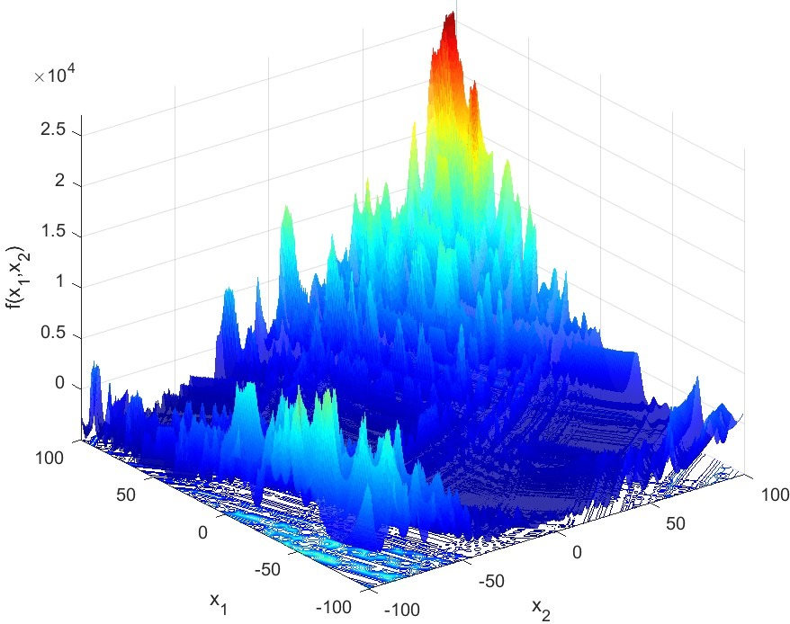
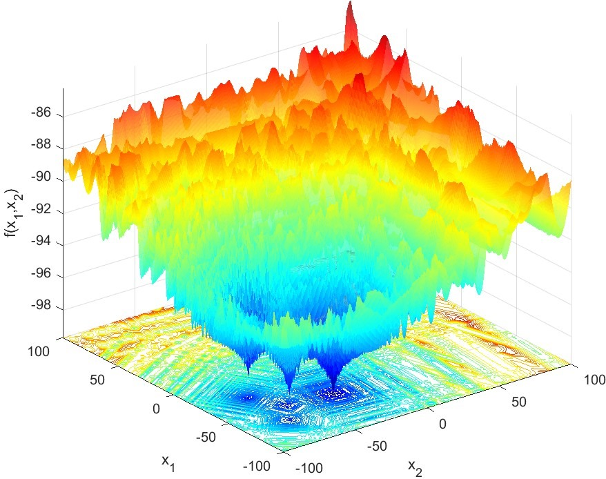

CEC 2025 Numerical Global Optimization Competition on GNBG-II generated Test Suite
Organizers :
Amir H. Gandomi
Faculty of Engineering & Information Technology, University of Technology Sydney, Ultimo,
Australia, and University Research and Innovation Center (EKIK), Obuda University, Budapest,
Hungary. Email: Gandomi@uts.edu.au
Rohit Salgotra
Faculty of Physics & Applied Computer Science, AGH University of Science & Technology, Poland.
Data Science Institute, University of Technology Sydney, Ultimo, Australia
Email: rohit.salgotra@agh.edu.pl
Kalyanmoy Deb
Department of Electrical and Computer Engineering, Michigan State University, East Lansing, USA.
Email: kdeb@egr.msu.edu
Description:
This competition challenges researchers to evaluate the performance of their global optimization algorithms on a carefully crafted
set of 24 problem instances generated using the Generalized Numerical Benchmark Generator
(GNBG) [1].
The test suite encompasses a diverse range of optimization landscapes, spanning from
smooth unimodal surfaces to highly intricate and rugged multimodal terrains.
The newly designed test suite follows the same baseline function as used in GECCO 2024 Competitions,
but the problems instances have been chanegd to add further complexity in the basic problems.
This test suite spans a wide array of problem terrains, from smooth unimodal landscapes to intricately
rugged multimodal realms. The suite encompasses:
Unimodal instances (f1 to f6),
Single-component multimodal instances (f7 to f15), and
Multi-component multimodal instances (f16 to f24).
With challenges that include various degrees of modality, ruggedness, asymmetry, conditioning, variable
interactions, basin linearity, and deceptiveness, the competition provides a robust assessment of
algorithmic capabilities. But this competition is not just about finding optimal solutions. It is about
understanding the journey to these solutions. Participants will decipher how algorithms navigate
deceptive
terrains, traverse valleys, and adapt to the unique challenges posed by each instance. In essence, it is
a quest for deeper insights into optimization within complex numerical landscapes. We warmly invite
researchers to partake in this competition and subject their global optimization algorithms to this
rigorous
test.


Two 2-dimensional problem spaces generated by GNBG.
Rules and Details:
The competition is open to all researchers and practitioners in the field of continuous numerical optimization.
Competitors can participate with either newly proposed algorithms (unpublished) or their previously published algorithms.
Winners and runners-up will receive certificates from the conference.
It is not required to attend the conference or register in order to participate in the competition.
No modifications are permitted to parameter settings of the instances in the '.mat' files.
Algorithms' parameter values must be consistent across all problem instances. Parameter tuning
tailored for individual instances is prohibited.
Problem instances must be treated as blackboxes. Direct use of GNBG's internal parameters in
algorithms is forbidden.
Winners will be required to share their algorithm's source code for result verification. This code will remain confidential and won't be published.
Evaluation Criteria
To assess the performance of optimization algorithms in this competition, three performance indicators
are used. These indicators will be calculated based on the outcomes of 31 independent runs for each
algorithm on every problem instance:
Average Absolute Error :
This metric is calculated as the mean of the absolute errors of the best-found solutions across the
31
runs. It reflects the algorithm's accuracy and consistency in finding solutions close to the global
optimum
Average Function Evaluations (FEs) to Acceptance Threshold :
This criterion measures the mean number of FEs required for the algorithm to find a solution with an
absolute error smaller than 10-8. It provides insight into the efficiency and convergence speed of
the
algorithm.
Success Rate :
Defined as the percentage of runs in which the algorithm successfully finds a solution with an
absolute error less than 10-8. This rate is indicative of the algorithm’s reliability and robustness in
consistently reaching high-accuracy solutions.
The stop criteria is reaching the maximum function evaluation number,
which is indicated in the parameter settings for each instance.
For f1 to f15, the maximum function evaluation number is 500,000,
and for f16 to f24, it is 1,000,000.
Submission Instructions
Participants are required to submit a compressed folder, labeled with the name of their algorithm,
containing the following elements:
Documentation File: This document should include:
Title of the Submission.
Names, affiliations, and email addresses of all team members.
A concise description of the algorithm.
A table presenting the mean and standard deviation of absolute errors and required FEs to
reach the acceptance threshold, based on 31 runs for each problem instance.
Criteria
Problem instances
F1
F2
F3
...
F23
F24
absolute error (mean and standard deviation)
...
Required FEs to Acceptance Threshold (mean and standard deviation)
...
Success rate
...
Result Files: The folder should also contain 24 text files (one for each problem instance, e.g.,
“f10.dat”). Each file must detail the results of 31 runs, organized in two columns representing the
absolute error and required FEs to reach the acceptance threshold, respectively.
These detailed individual run results will be utilized for a thorough statistical analysis to ascertain
the winners.
Please ensure that all files are named appropriately and correspond to the respective problem instances.
The accuracy and completeness of this data are crucial for a fair and comprehensive evaluation of all
entries.
Weightage for Decision
Different problem categories will carry varying weights in the final decision.
Multi-component multimodal problems will have the highest weight, followed by single-component multimodal problems, and then unimodal problems with the least weight.
For inquiries or further clarification regarding the competition, feel free to reach out to Rohit Salgotra.
Please submit your competition files via email to both Rohit Salgotra (r.03dec@gmail.com) and Amir Gandomi (Gandomi@uts.edu.au).
Ensure to include both email addresses in a single email to streamline the submission process. The deadline for submission is 15 January 2025. Upon submission, you will receive an acknowledgement from us confirming the receipt of your files.